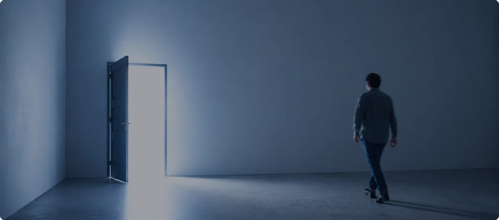
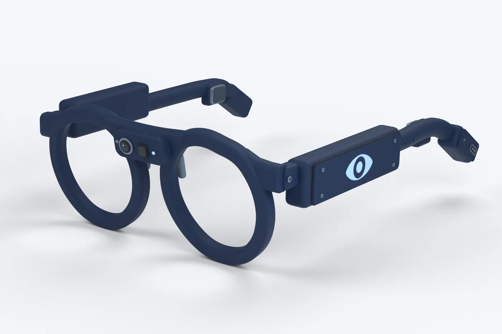
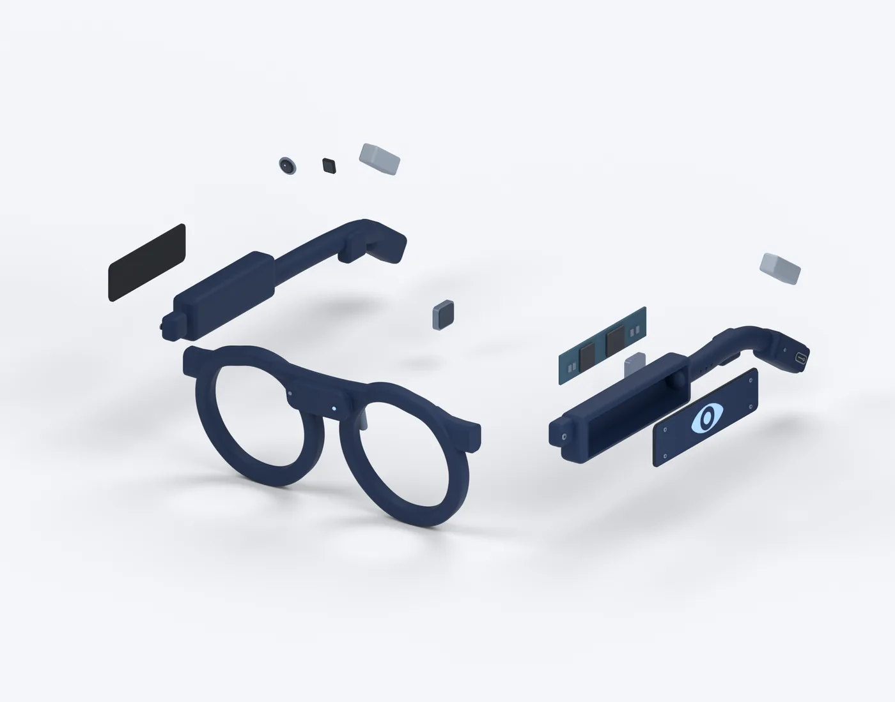
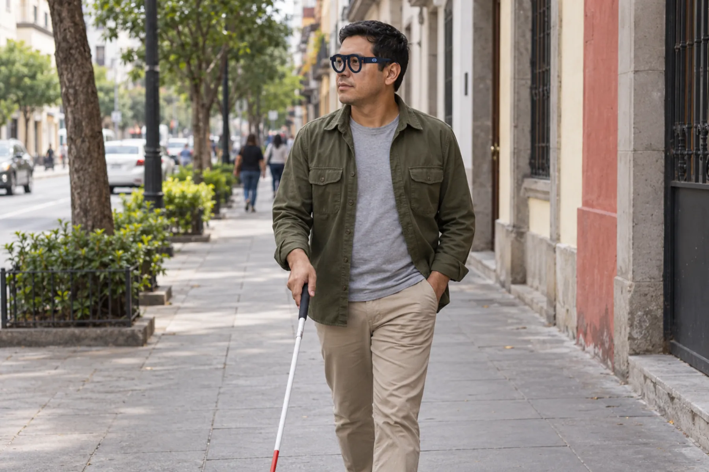
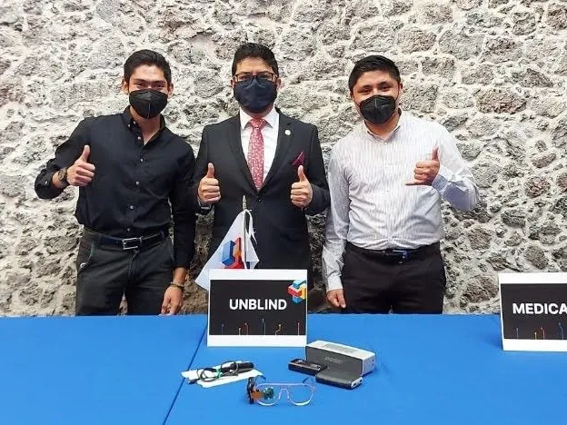
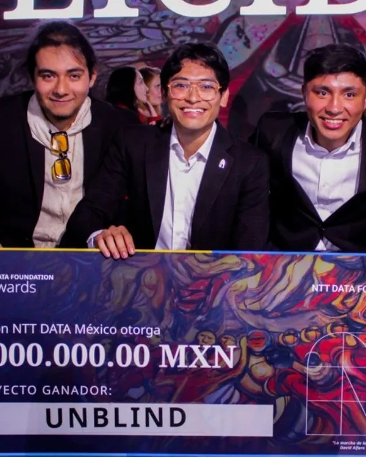
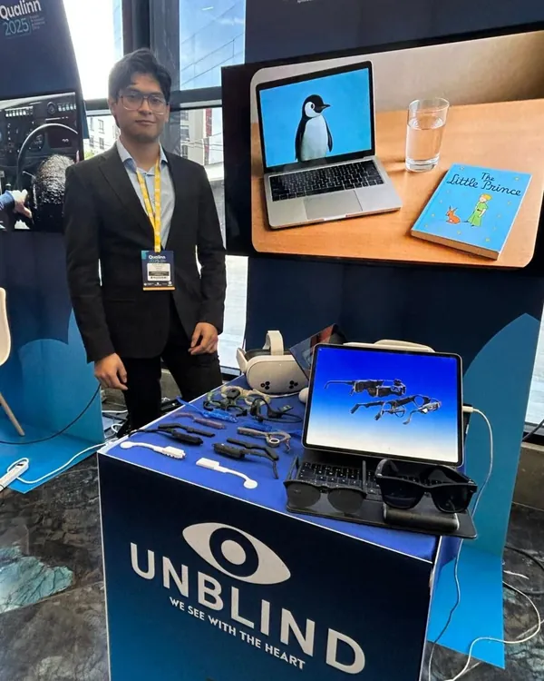

No se trata de ver con los ojos. Se trata de percibir el mundo de otra manera.
Escucha dónde están las cosas.
El audio 3D de UNBLIND hace que cada persona y cada objeto suenen desde donde están: a tu izquierda, al frente o atrás. Y con el LiDAR, el mismo sonido te avisa dónde hay obstáculos.
Ponte audífonos y escucha cómo suena.
Ilustración

ParedPuertaPersona
Arrastra la imagen para girar la cabeza
Lo que hace, visto como UNBLIND.
La misma calle, contada de cinco maneras. Toca una o deja que cambie.
También lee textos en voz alta y reconoce productos y códigos. Mientras está en desarrollo, no sustituye al bastón ni al perro guía.
Ilustración
«Calle peatonal, de día. Tres personas caminan hacia ti; al centro, un perro guía.»
IzquierdaAl frenteDerecha
Perro guía · muy cerca
Rostros registrados
Chaleco azul marinoPantalón grisPelaje dorado
Ligeros, accesibles y con IA por dentro.
Un prototipo para usarse todos los días: cámara, LiDAR, un procesador y sonido por conducción ósea, en unos lentes ligeros. Diseñados y probados con personas con discapacidad visual.
Baja para verlos por dentro
Se aflojan los tornillos
Se deslizan las tapas
Sale el procesador
Las puntas, por dentro: ahí van las baterías
Salen las baterías y los transductores
Se separan las patillas, la cámara y el LiDAR
CámaraVe lo que tienes enfrente: textos, objetos, rostros y colores.8 mm de diámetro
LiDARMide a qué distancia está cada cosa, para avisarte con sonido dónde hay obstáculos.Ventana de 5.5 × 6 mm
Procesador CPU + TPUReconoce y describe en los lentes, sin depender siempre de internet.Placa de 61 × 13 mm, dentro de la patilla derecha
Conducción óseaEl sonido llega por los huesos de la cabeza y deja libres los oídos para escuchar la calle.Una de cada lado · 11.5 × 10 mm
BateríasVan en las puntas de las patillas, detrás de las orejas.Una de cada lado · 21 × 8 × 7 mm
VeLa cámara y el LiDAR captan lo que tienes enfrente.
EntiendeEl procesador reconoce personas, objetos y obstáculos.
Te lo dicePor conducción ósea y con audio 3D: cada cosa suena desde donde está.


«Tres personas y un perro guía caminan por la banqueta, hacia ti.»
Ilustración
Hacia dónde vamos: unos lentes para todos los días.

Concepto · Ilustración
Del primer prototipo a la calle.
En 2021 nos preguntamos cómo podría una persona ciega saber qué tiene enfrente. De esa pregunta salió UNBLIND, y de UNBLIND nació Alba: aprendimos a ver con máquinas.

2021
El primer prototipo, en Solve for Tomorrow de Samsung.

2024
Ganadores nacionales de los eAwards México, con pase a la final global.

2025
Con stand propio en Qualinn, en Cali, Colombia.
2026
Premio Estatal de la Juventud · Estado de México
Para Alan Soubran, CEO de Alba, por una trayectoria en la que UNBLIND ha sido central. Modalidad «Innovación que transforma».
Si tienes discapacidad visual, acompañas a alguien o representas a una institución, platícanos qué necesitas. Lo que nos cuentes guía lo que construimos.